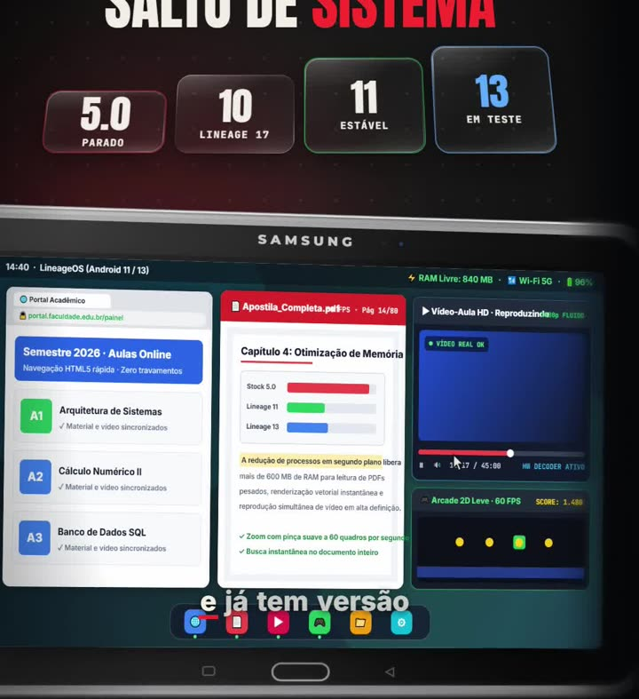

a fabricante desistiu dele.
Seu tablet não morreu. Abandonaram ele.
O meu estava congelado no Android 5 desde 2017. Hoje roda Android 11, abre PDF, passa aula em vídeo e não engasga. Aqui está o caminho pra fazer o mesmo com o seu.
por que isso existe
Um vídeo pra cada modelo? Impossível.
Quando eu ressuscitei aquele notebook do lixo, a minha DM virou um formigueiro. Todo mundo com a mesma pergunta: "e o meu, funciona?"
Com tablet é ainda mais sério. Cada modelo tem um nome interno, uma variante, um arquivo próprio e um jeito próprio de dar errado. O tutorial que salvou o tablet do vizinho pode travar o seu pra sempre.
Eu não consigo gravar um vídeo pra cada tablet do Brasil. Mas consigo fazer outra coisa:
Você me diz qual é o seu tablet.
Eu monto o caminho dele.
no meu tablet de cobaia
Do Android 5 ao 11
Android · parado desde 2017
Mesma peça. Mesmo processador. Sistema novo.



o que ninguém te conta
Por que quase todo mundo desiste no meio
e se o meu não puder trocar de android?
Eu não vendo Android novo. Eu vendo o limite do seu tablet.
Nem todo tablet tem um sistema novo feito pela comunidade. Isso não significa que ele não pode virar outra coisa. O seu guia leva ele até o último degrau que ele aguenta:
- 1Ajuste fino
As configurações escondidas que mudam a resposta do sistema, e a troca do que é pesado pelo que é leve.
- 2As entranhas
Com um computador e um cabo, arrancamos os apps que a fábrica forçou e que o tablet não deixa remover, e mexemos no comportamento do sistema por dentro. Nada de "limpar a memória".
- 3Sistema novo
Se existe uma versão feita por voluntários pro seu modelo, o guia te leva até ela, do recovery ao primeiro boot. Foi o que eu fiz: do 5 pro 11.
Todo tablet Android chega pelo menos ao nível 2. Você descobre até onde o seu vai logo na primeira página do guia.
o que chega pra você
O guia do seu tablet
Um material completo, feito do zero pro seu modelo. Pensado pra quem nunca fez isso e não quer precisar de mais ninguém.
O nome verdadeiro, a variante exata e até que nível ele chega.
A ordem certa, do passo mais seguro ao mais profundo.
Onde tocar, o que digitar e o que deve aparecer na tela depois.
Cada problema conhecido no seu modelo e a saída de cada um.
Só fonte original, da variante certa. Nada de site duvidoso.
Como voltar ao estado de fábrica se algo sair do roteiro.
PDF completo, com ilustrações · entregue no seu WhatsApp em até 48 horas
lado a lado
O mapa leva até a porta. O guia abre ela.
escolha como quer ir
Sozinho com o guia, ou comigo do lado.
o guia
O guia do seu tablet
Pix ou cartão
- Feito pro seu modelo, até o limite dele
- Cada passo narrado e cada erro previsto
- Entregue no WhatsApp em até 48 horas
- 7 dias de garantia
guia + suporte comigo
Eu vou junto com você
Suporte pessoal comigo no WhatsApp, do primeiro passo até o tablet ligado no limite. Cada etapa, cada erro, cada tela estranha.
o suporte
Como sou eu que atendo, o suporte tem um limite de pessoas por semana.
É pra você se
- Tem um tablet Android parado ou lento
- Quer usar ele de verdade: estudo, vídeo, leitura
- Topa seguir um passo a passo com calma
Não é pra você se
- O tablet é um iPad
- Ele não liga nem na tomada
- Quer um milagre sem seguir nenhum passo
Garantia sem pergunta
Recebeu o guia e não era o que você esperava? Pede o reembolso em até 7 dias e o dinheiro volta inteiro.
dúvidas
Antes de você perguntar
Preciso ter o Claude?
Não. Eu uso o Claude pra pesquisar e montar o seu guia. Você só segue o passo a passo.
Preciso de computador?
Pro nível 1, não. Pros níveis 2 e 3, sim: um computador (de preferência com Windows) e um cabo USB que transfira dados. Sem computador, o guia te leva até onde dá pra ir sem ele.
Funciona com qualquer marca?
Com qualquer tablet Android: Samsung, Lenovo, Multilaser, Positivo, Motorola, Xiaomi e outros. iPad não entra.
Vou conseguir subir a versão do Android?
Depende de existir um sistema feito pela comunidade pro seu modelo. Se existir, o guia te leva até ele. Se não, o seu tablet vai até o limite pelos outros níveis. Você descobre qual é o caso logo no começo do guia.
Posso estragar meu tablet?
Mexer no sistema sempre tem algum risco, e eu não vou esconder isso de você. O guia existe pra reduzir esse risco ao mínimo: arquivo certo, ordem certa e uma rota de fuga em cada etapa.
Quando eu digo qual é o meu tablet?
Depois do pagamento você cai numa página que abre o meu WhatsApp com o seu modelo já escrito. O guia chega por lá em até 48 horas.
Comprei só o guia. Posso pegar o suporte depois?
Pode, pagando só a diferença: R$ 70,00. Você fecha no mesmo preço de quem levou os dois juntos.
ele está na gaveta agora.